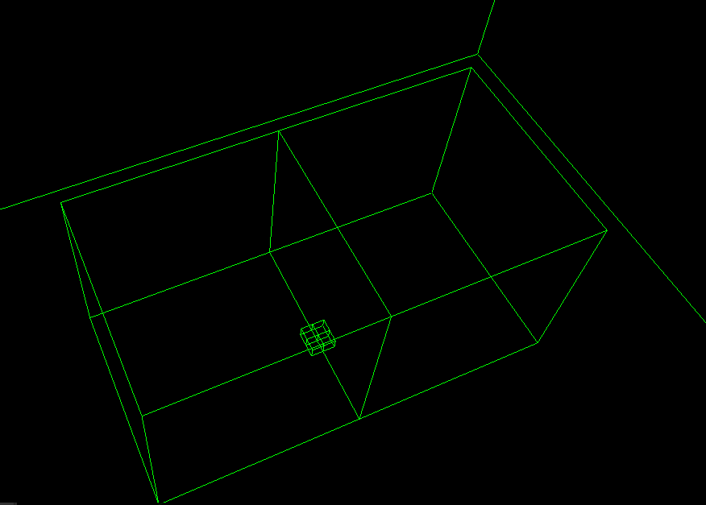

Volumetric Particles Part 1 - Adaptive Grid
This is the first part of a series of blog posts covering the details of my master's thesis. An overview of this project can be found here. The source code is available on github.
In this post I am going to cover the data structure that is created on the CPU and used during raymarching on the GPU to calculate the volumetric effects. I am using a simple example scene for this. The subdivision of the grid can be seen in the following screenshot:
It consists of the root node in the background, two nodes on the medium level and four nodes on the highest resolution. The subdivision factor on each level is 16. This creates a similar tree to GVDB.
Node Data
The following buffers contain the data needed on the GPU for the adaptive grid:
- NodeInfo - image and child offsets
- ActiveBits - bits to indicate which child nodes are active
- NodeCount - store the number of active nodes
- ChildIndices - index into the NodeInfo array for each child
Each node stores the 3D image offset into a 3D texture atlas which contains the actual volumetric data. This image offset is packed into a 32bit unsigned integer value. In addition to this an additional offset for mipmaps is stored. Each node also stores the start offset into the child indices array.
For the current subdivision factor of 16 it is necessary to store 16^3 bits for all possible active children based on their positions inside of the parent node. For each node 128 32bit unsigned integer values are reserved inside the active bits array to store the child information. In addition in the node count array the number bits are stored which have been set until this position in the array.
The find the index into the node info array for an active child bit counting is used. To achieve this the node indices are stored inside the child indices array. Because they are ordered based on the 1D index of the bits it is possible to find the correct position in the child indices array from the active bits.
Example
Using the same subdivision of the grid as in the example above the following data on the different levels is stored:
| Node Index | Grid Level | Node Position | 1D index | Array Index | Bit Index | Child Offset |
|---|---|---|---|---|---|---|
| 0 | 0 | 0,0,0 | 0 | 0 | 0 | 0 |
| 1 | 1 | 7,7,8 | 2167 | 67 | 23 | 2 |
| 2 | 1 | 8,7,8 | 2168 | 67 | 24 | 4 |
| 3 | 2 | 15,15,6 | 1791 | 55 | 31 | |
| 4 | 2 | 15,15,7 | 2047 | 63 | 31 | |
| 5 | 2 | 0,15,6 | 1776 | 55 | 16 | |
| 6 | 2 | 0,15,7 | 2032 | 63 | 16 |
| Child Indices | 1 | 2 | 3 | 4 | 5 | 6 |
The following calculations are performed:
- 1D index = (pos.z * resolution + pos.y) * resolution + pos.x
- Array Index = 1D index / 32
- Bit Index = 1D index % 32
How this data is used on the GPU to traverse the grid is described in the next blog post.